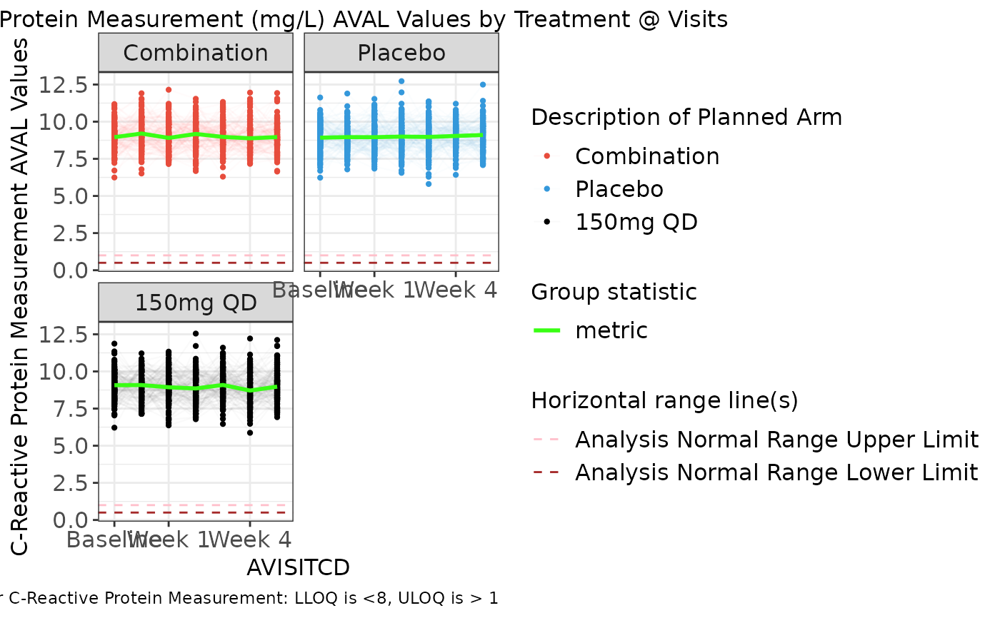
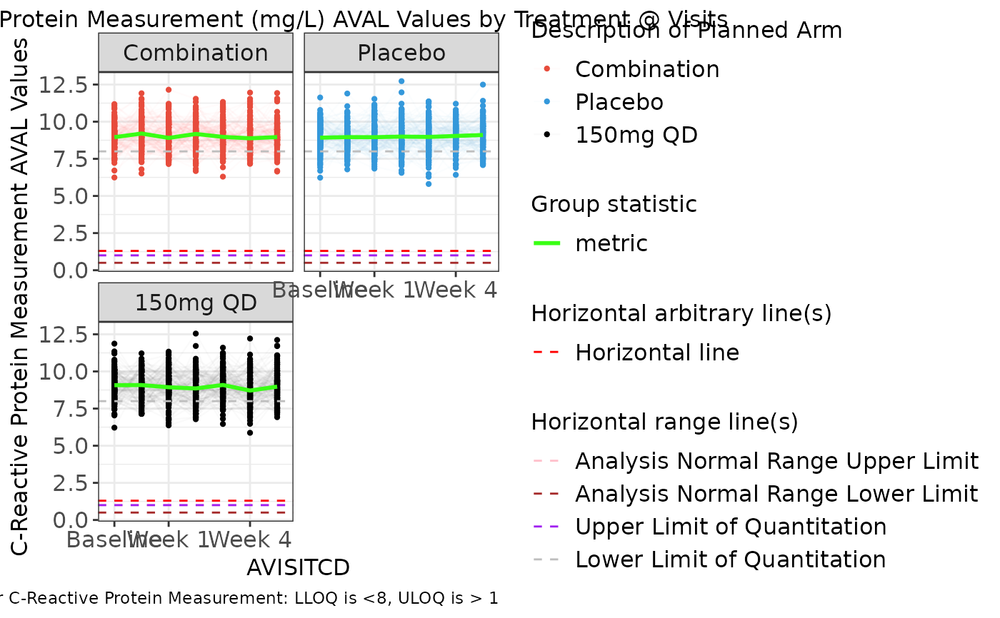
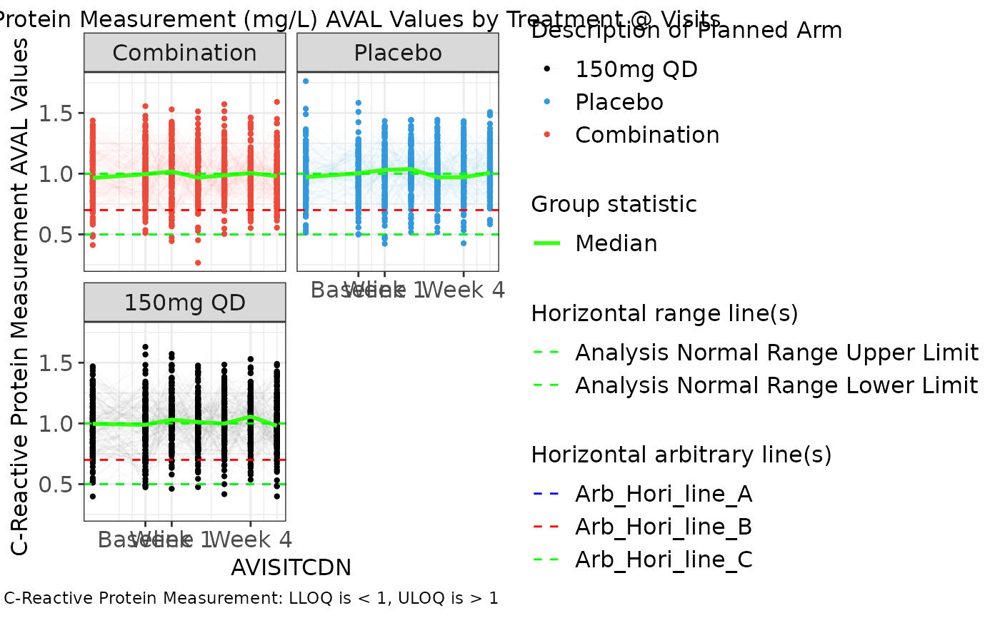
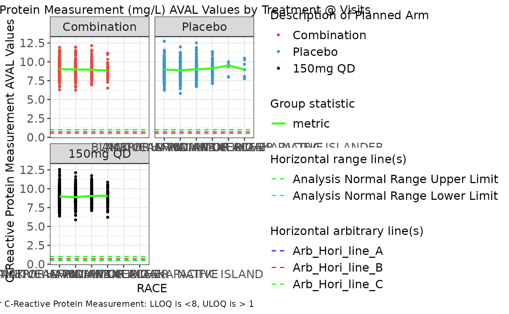
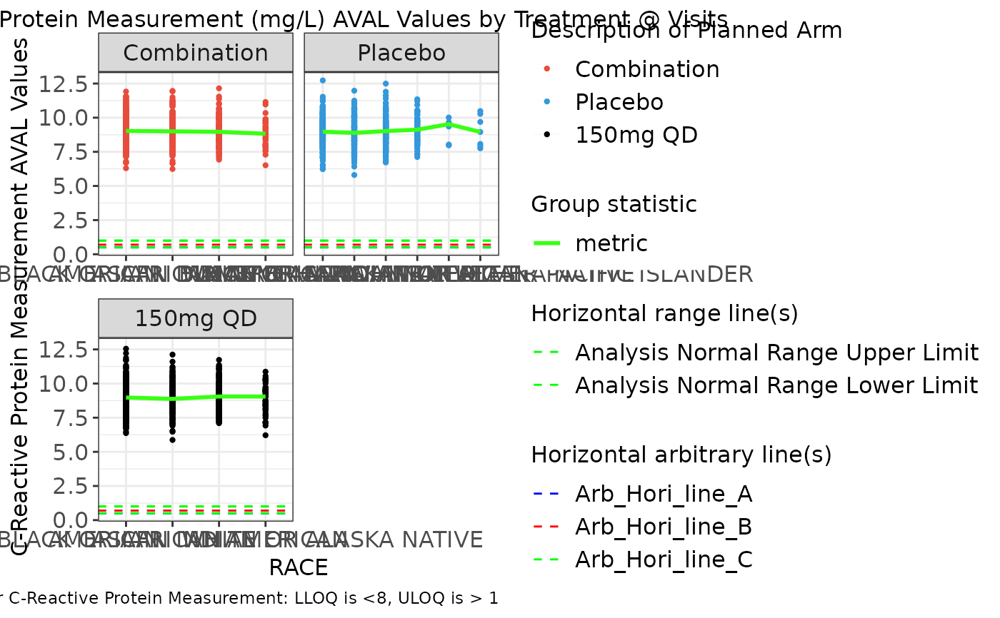

This function is rendered by teal.goshawk module
Usage
g_spaghettiplot(
data,
subj_id = "USUBJID",
biomarker_var = "PARAMCD",
biomarker_var_label = "PARAM",
biomarker,
value_var = "AVAL",
unit_var = "AVALU",
trt_group,
trt_group_level = NULL,
loq_flag_var = "LOQFL",
time,
time_level = NULL,
color_manual = NULL,
color_comb = "#39ff14",
ylim = c(NA, NA),
alpha = 1,
facet_ncol = 2,
facet_scales = c("fixed", "free", "free_x", "free_y"),
xtick = ggplot2::waiver(),
xlabel = xtick,
rotate_xlab = FALSE,
font_size = 12,
dot_size = 2,
group_stats = "NONE",
hline_arb = numeric(0),
hline_arb_color = "red",
hline_arb_label = "Horizontal line",
hline_vars = character(0),
hline_vars_colors = "green",
hline_vars_labels = hline_vars
)Arguments
- data
data frame with variables to be summarized and generate statistics which will display in the plot.
- subj_id
unique subject id variable name.
- biomarker_var
name of variable containing biomarker names.
- biomarker_var_label
name of variable containing biomarker labels.
- biomarker
biomarker name to be analyzed.
- value_var
name of variable containing biomarker results.
- unit_var
name of variable containing biomarker units.
- trt_group
name of variable representing treatment group.
- trt_group_level
vector that can be used to define the factor level of
trt_group.- loq_flag_var
name of variable containing
LOQflag e.g.LOQFL.- time
name of variable containing visit names.
- time_level
vector that can be used to define the factor level of time. Only use it when x-axis variable is character or factor.
- color_manual
vector of colors.
- color_comb
name or hex value for combined treatment color.
- ylim
('numeric vector') optional, a vector of length 2 to specify the minimum and maximum of the y-axis if the default limits are not suitable.
- alpha
subject line transparency (0 = transparent, 1 = opaque)
- facet_ncol
number of facets per row.
- facet_scales
passed to
scalesinggplot2::facet_wrap. Should scales be fixed ("fixed", the default), free ("free"), or free in one dimension ("free_x","free_y")?- xtick
a vector to define the tick values of time in x-axis. Default value is
ggplot2::waiver().- xlabel
vector with same length of
xtickto define the label of x-axis tick values. Default value isggplot2::waiver().- rotate_xlab
boolean whether to rotate x-axis labels.
- font_size
control font size for title, x-axis, y-axis and legend font.
- dot_size
plot dot size. Default to 2.
- group_stats
control group mean or median overlay.
- hline_arb
('numeric vector') value identifying intercept for arbitrary horizontal lines.
- hline_arb_color
('character vector') optional, color for the arbitrary horizontal lines.
- hline_arb_label
('character vector') optional, label for the legend to the arbitrary horizontal lines.
- hline_vars
('character vector'), names of variables
(ANR*)or values(*LOQ)identifying intercept values. The data inside of theggplot2object must also contain the columns with these variable names- hline_vars_colors
('character vector') colors for the horizontal lines defined by variables.
- hline_vars_labels
('character vector') labels for the legend to the horizontal lines defined by variables.
Examples
# Example using ADaM structure analysis dataset.
library(stringr)
# original ARM value = dose value
arm_mapping <- list(
"A: Drug X" = "150mg QD", "B: Placebo" = "Placebo", "C: Combination" = "Combination"
)
color_manual <- c("150mg QD" = "#000000", "Placebo" = "#3498DB", "Combination" = "#E74C3C")
ADLB <- rADLB
var_labels <- lapply(ADLB, function(x) attributes(x)$label)
ADLB <- ADLB %>%
mutate(AVISITCD = case_when(
AVISIT == "SCREENING" ~ "SCR",
AVISIT == "BASELINE" ~ "BL",
grepl("WEEK", AVISIT) ~
paste(
"W",
trimws(
substr(
AVISIT,
start = 6,
stop = str_locate(AVISIT, "DAY") - 1
)
)
),
TRUE ~ NA_character_
)) %>%
mutate(AVISITCDN = case_when(
AVISITCD == "SCR" ~ -2,
AVISITCD == "BL" ~ 0,
grepl("W", AVISITCD) ~ as.numeric(gsub("\\D+", "", AVISITCD)),
TRUE ~ NA_real_
)) %>%
# use ARMCD values to order treatment in visualization legend
mutate(TRTORD = ifelse(grepl("C", ARMCD), 1,
ifelse(grepl("B", ARMCD), 2,
ifelse(grepl("A", ARMCD), 3, NA)
)
)) %>%
mutate(ARM = as.character(arm_mapping[match(ARM, names(arm_mapping))])) %>%
mutate(ARM = factor(ARM) %>%
reorder(TRTORD)) %>%
mutate(ANRLO = .5, ANRHI = 1) %>%
rowwise() %>%
group_by(PARAMCD) %>%
mutate(LBSTRESC = ifelse(USUBJID %in% sample(USUBJID, 1, replace = TRUE),
paste("<", round(runif(1, min = .5, max = .7))), LBSTRESC
)) %>%
mutate(LBSTRESC = ifelse(USUBJID %in% sample(USUBJID, 1, replace = TRUE),
paste(">", round(runif(1, min = .9, max = 1.2))), LBSTRESC
)) %>%
ungroup()
attr(ADLB[["ARM"]], "label") <- var_labels[["ARM"]]
attr(ADLB[["ANRLO"]], "label") <- "Analysis Normal Range Lower Limit"
attr(ADLB[["ANRHI"]], "label") <- "Analysis Normal Range Upper Limit"
# add LLOQ and ULOQ variables
ADLB_LOQS <- goshawk:::h_identify_loq_values(ADLB, "LOQFL")
ADLB <- left_join(ADLB, ADLB_LOQS, by = "PARAM")
g_spaghettiplot(
data = ADLB,
subj_id = "USUBJID",
biomarker_var = "PARAMCD",
biomarker = "CRP",
value_var = "AVAL",
trt_group = "ARM",
time = "AVISITCD",
color_manual = color_manual,
color_comb = "#39ff14",
alpha = .02,
xtick = c("BL", "W 1", "W 4"),
xlabel = c("Baseline", "Week 1", "Week 4"),
rotate_xlab = FALSE,
group_stats = "median",
hline_vars = c("ANRHI", "ANRLO"),
hline_vars_colors = c("pink", "brown")
)

g_spaghettiplot(
data = ADLB,
subj_id = "USUBJID",
biomarker_var = "PARAMCD",
biomarker = "CRP",
value_var = "AVAL",
trt_group = "ARM",
time = "AVISITCD",
color_manual = color_manual,
color_comb = "#39ff14",
alpha = .02,
xtick = c("BL", "W 1", "W 4"),
xlabel = c("Baseline", "Week 1", "Week 4"),
rotate_xlab = FALSE,
group_stats = "median",
hline_arb = 1.3,
hline_vars = c("ANRHI", "ANRLO", "ULOQN", "LLOQN"),
hline_vars_colors = c("pink", "brown", "purple", "gray"),
dot_size = 3
)

g_spaghettiplot(
data = ADLB,
subj_id = "USUBJID",
biomarker_var = "PARAMCD",
biomarker = "CRP",
value_var = "AVAL",
trt_group = "ARM",
time = "AVISITCDN",
color_manual = color_manual,
color_comb = "#39ff14",
alpha = .02,
xtick = c(0, 1, 4),
xlabel = c("Baseline", "Week 1", "Week 4"),
rotate_xlab = FALSE,
group_stats = "median",
hline_arb = c(.5, .7, 1),
hline_arb_color = c("blue", "red", "green"),
hline_arb_label = c("Arb_Hori_line_A", "Arb_Hori_line_B", "Arb_Hori_line_C"),
hline_vars = c("ANRHI", "ANRLO"),
dot_size = 4
)

# removing missing levels from the plot with facet_scales
g_spaghettiplot(
data = ADLB,
subj_id = "USUBJID",
biomarker_var = "PARAMCD",
biomarker = "CRP",
value_var = "AVAL",
trt_group = "ARM",
time = "RACE",
color_manual = color_manual,
color_comb = "#39ff14",
alpha = .02,
facet_scales = "fixed",
rotate_xlab = FALSE,
group_stats = "median",
hline_arb = c(.5, .7, 1),
hline_arb_color = c("blue", "red", "green"),
hline_arb_label = c("Arb_Hori_line_A", "Arb_Hori_line_B", "Arb_Hori_line_C"),
hline_vars = c("ANRHI", "ANRLO")
)

g_spaghettiplot(
data = ADLB,
subj_id = "USUBJID",
biomarker_var = "PARAMCD",
biomarker = "CRP",
value_var = "AVAL",
trt_group = "ARM",
time = "RACE",
color_manual = color_manual,
color_comb = "#39ff14",
alpha = .02,
facet_scales = "free_x",
rotate_xlab = FALSE,
group_stats = "median",
hline_arb = c(.5, .7, 1),
hline_arb_color = c("blue", "red", "green"),
hline_arb_label = c("Arb_Hori_line_A", "Arb_Hori_line_B", "Arb_Hori_line_C"),
hline_vars = c("ANRHI", "ANRLO"),
dot_size = 1
)
